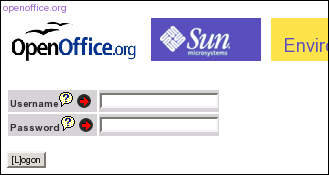
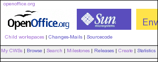
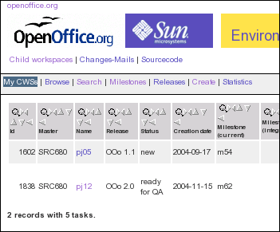
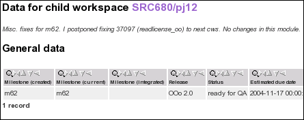
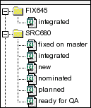
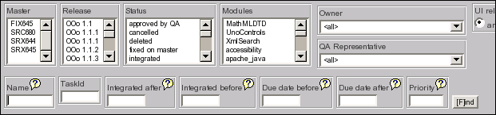
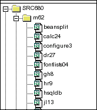
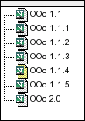
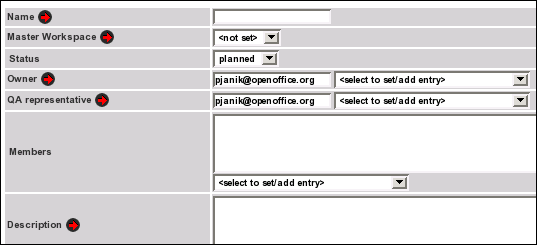

Utilisation de EIS (Environment Information system)Traduction du blog de Pavel Janik http://blog.janik.cz/index.htmlJ'ai décidé (bon, Michael a décidé que je devrais être puni pour ne pas lire le code source des outils que j'utilise ;-) d'étendre les conseils déjà donnés au sujet des child workspaces dans EIS à une documentation niveau utilisateur de EIS Environment Information System (EIS en abrégé http://eis.services.openoffice.org/) est un système qui fournit des informations intéressantes pour les développeurs. Vous pouvez y accéder de deux façons - en tant qu'utilisateur invité avec des privilèges en lecture seule ou en tant qu'utilisateur enregistré. Je ne décrirai que l'accès pour les utlisateurs enregistrés parce que les utilisateurs invités en sont une sous-catégorie. Pour accéder à EIS en tant qu'utilisateur enregistré, vous devez vous loguer : 
Les Child workspace peuvent être dans l'un des états suivant : planned
(planifié), new (nouveau), ready for QA (prêt pour QA), nominated
(proposé), integrated (intégré) ou deleted (supprimé). Lorsque vous le
créez, en utilisant le lien mentionné ci-dessous, dans EIS,
son état initial est planed . Lorsque finallement vous le créez
en utilisant la commande cwscreate, il est promu à un nouveau niveau.
Si vous voulez le supprimer, vous changez sont statut à deleted. Après
que vos changements planifiés sont terminés, vous l'assignez au projet
QA et changez le statut à ready for QA. Une personne du projet QA peut
alors changer le statut en revenant à new (s'il y a des problèmes) ou
pour nominated pour une inclusion. Après l'intégration de votre Child
workspace, le statut est changé à integrated.Utilisez votre adresse mail
OpenOffice.org comme usernam
Si vous vous loguez avec succès, vous verrez votre nom d'utilisateur OpenOffice.org du côté droit de l'interface La partie la plus importante de l'interface est dédiée à des liens vers des Child workspace 
Après avoir cliqué dessus, un
nouveau sous menu s'ouvre. Ses entrées sont décrites en détails
ci-dessous
My CWSs permet au développeur de suivre ses propres Child workspaces. En cliquant dessus, vous verrez la liste de vos Child workspace ouverts, dans un tableau simple avec une information complète à leur sujet. 
Ici, vous pouvez également voir le
statut de vos Child workspace (voir ci-dessous pour un exemple de
statut). Les noms des Child workspace sont des liens vers des
informations plus détaillées à propos du Child workspace correspondant
(historique du statut, tâches assignées à ce child workspace, modules
et d'autres faits intéressants)

Browse vous permet de naviguer dans la liste de tous les Child workspaces. 
Comme vous pouvez le voir sur la
copie d'écran, vous pouvez naviguer sur la liste par Master workspaces
(comme SRC680, SRX645, ...) et leur état.
Un autre outil très utile est Search. Je trouve personnellement que c'est la partie la plus valable de EIS 
Vous pouvez faire une recherche
sur les Child workspaces (astuces : utilisez pj% pour
trouver to les childworkspace qui commencent par les lettres pj), les
tâches dans IZ, etc.
Milestones est très utile si vous avez besoin de savoir ce qui a été intégré dans la milestone. Ex : la copie d'écran ci-dessous montre les Child workspaces intégrés dans la m62 : 
Releases est très utilise pour
savoir ce qui a été intégré dans une release - vous devez choisir la
release dans le panneau de gauche et la liste sera affichée sur le côté
droit.

Dans le menu Create, vous pouvez
créer votre Child workspace (il sera sur "planned" jusqu'à ce que vous
le portiez à "new" en utilisant l'outil cwscreate)

Le champ Name est le nom du Child
workspace qui va être créé. Merci d'utiliser un nom descriptif si c'est
pour l'implémentation d'une nouvelle fonctionnalité et ajoutez, par
exemple, 01 à son nom (ex : writerperfect01, ihateword01, etc.) Si
c'est un Child workspace pour une simple correction de bug, le standard
commun est d'avoir votre id/nick/username complété par un nombre
unique, comme ause01, pj12 etc.
Dans le champ Master Workspace vous devez choisir le Master Workspace pour votre Child workspace. Seulement SRC680 et SRX645 ont un sens. Ainsi si vous voulez travailler sur des issues concernant la version 2.0, vous devez choisir SRC680; Vous ne pouvez changez le statut de votre Child workspace pendant sa création, parce qu'il sera toujours créé avec l'état "planned". Mais plus tard, vous pouvez choisir la fenêtre de sélection Status pour modifier le statut de votre Child workspace. FIXME : Complété avec un représentant de QA Le champ Members doit être rempli par des personnes intéressées par ce Child workspace. Il sont alors informés de l'état, des modifications, etc. Le champ Description se décrit lui-même. Veuillez rentrer une description complète ici. Cela aidera les personnes qui ne trouvent pas le Child workspace suffisemment descriptif par lui-même. Les commentaires QA sont quelque chose comme un chat entre vous, les personnes du QA et les autres. Entrez uniquement de courtes informations. Pour permettre une planification, vous devez aussi fixer des dates comme Estimated due date (prête pour le QA) et Estimated due date. La première est une estimation de quand le travail sera prêt pour le travail du QA. Si la date est dépassée et que votre Child workspace n'est pas dans le statut de "ready for QA" vous recevrez un mail pour vous en avertir. Utilisez le format de date ISO (comme 2004-11-17 pour aujourd'hui). Ou pressez l'icône d'aide et lisez ce que vous dit la bulle ;-) Le niveau d'impact aide les personnes à distinguer quelles applications peuvent être impactées par l'intégration de ce Child wokspace. Pour de simple corrections, utilisez "Implementation Details Only". Si votre Child workspace créé de nouvelles boîtes de dialogue ou des changements dans une interface utilisateur préexistante, merci d'utiliser la case à cocher correspondante. La même chose s'applique pour l'aide correspondante. |
|
OpenOffice.org native tongue concept and francophone
project are built for you with pride by Guy Capra (Alomphega). |